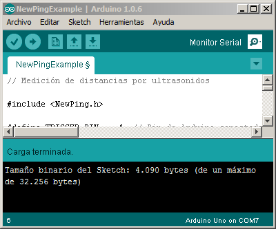

1. Sensor de distancia por ultrasonidos¶

Objetivos¶
- Comprender el funcionamiento del sensor de distancia por ultrasonidos.
- Medir distancias con un sensor de distancia por ultrasonidos.
El sensor de ultrasonidos¶
Este sensor tiene un pequeño altavoz que emite un pitido y un micrófono sensor que detecta el pitido emitido. El dispositivo calcula el tiempo que el sonido tarda en ir hasta un objeto y volver reflejado. La distancia desde el sensor hasta el objeto se calcula a partir de la velocidad del sonido en el aire y del tiempo que tarda el sonido en recorrer esa distancia.
El pitido emitido tiene una frecuencia de 40kHz. Esta frecuencia se encuentra muy por encima de 20kHz, que es la máxima frecuencia que los humanos pueden percibir. Por esta razón a este sonido de elevada frecuencia se le denomina ultrasonido.
Existen varios modelos de sensor en el mercado, los más conocidos y asequibles son el modelo SR04 y la versión más avanzada SRF05. En este tutorial se explica el modelo SR04. La explicación es válida para modelos más avanzados, teniendo en cuenta que estos tienen mayor capacidad o características añadidas.
Características del sensor SR04¶
Este sensor de ultrasonidos tiene las siguientes características:
- Distancia de detección: 2cm - 400cm
- Resolución: 0,3cm
- Frecuencia de sonido: 40kHz
- Ángulo eficaz: 15º
- Tensión de alimentación: 5V
- Consumo de corriente: 15mA
Librería para sensores de ultrasonidos¶
Para manejar los sensores de ultrasonidos existen varias librerías de trabajo. La librería estándar más precisa que se puede utilizar es NewPing. Para instalar la librería hay que seguir los siguientes pasos:
- Descargar la librería
- Guardar el fichero NewPing_v1.9.4.zip en el ordenador
- Abrir el entorno gráfico de Arduino
- En la pestaña Sketch.. Importar librería.. pinchar 'Add Library...'
- Buscar el fichero descargado y después de seleccionarle, pulsar 'Abrir'
- Comprobar que en la pestaña Sketch.. Importar librería.. aparece una nueva librería llamada NewPing
Con estos pasos la librería estará correctamente instalada.
Medición de distancias¶
Para medir distancias con el sensor SR04 se seguirán los siguientes pasos:
Conectar el sensor SR04 a la placa Arduino según el siguiente esquema:

Copiar el siguiente programa, compilarlo y descargarlo en la placa Arduino.
1 2 3 4 5 6 7 8 9 10 11 12 13 14 15 16 17 18 19 20 21 22 23 24 25 26 27 28 29 30 31 32
// Medición de distancias por ultrasonidos. // Método basado en la velocidad del sonido. #include <NewPing.h> #define TRIGGER_PIN 4 // Pin de Arduino conectado a la patilla Trigger, en el sensor de ultrasonidos. #define ECHO_PIN 2 // Pin de Arduino conectado a la patilla Echo, en el sensor de ultrasonidos. #define MAX_DISTANCE 200 // Distancia máxima que podrá medir el sensor. // Esta distancia puede llegar a valer 400cm #define SOUND_SPEED 0.171 // La mitad de la velocidad del sonido en el aire, medida en [mm/us] NewPing sonar(TRIGGER_PIN, ECHO_PIN, MAX_DISTANCE); // Configuración de la librería NewPing void setup() { Serial.begin(115200); // Abre las comunicaciones serie entre Arduino y el ordenador } void loop() { int microseconds; // Tiempo que tarda el sonido del sensor en rebotar y volver int distance; // Distancia al obstáculo en centímetros delay(50); // Espera 50 milisegundos entre dos ping consecutivos. // Este tiempo evita errores producidos por el eco. microseconds = sonar.ping(); // Mide el tiempo que tarda el sonido en rebotar distance = microseconds * SOUND_SPEED; // Calcula la distancia al objeto en milímetros Serial.print("Ping: "); // Envía al ordenador un mensaje con la distancia medida Serial.print(microseconds); Serial.print("us\t"); Serial.print(distance); Serial.println("mm"); }
Abrir el monitor serie (Monitor Serial) pulsando el icono que aparece arriba a la derecha en el entorno gráfico de Arduino.
En la nueva ventana que aparece, escoger la velocidad de transmisión en el recuadro que aparece abajo a la derecha. En este caso, la velocidad programada es de 115200 baudios.
El cuadro debe mostrar continuamente la información de tiempo y distancia.

En este momento, si todo ha ido bien, Arduino estará midiendo continuamente la distancia entre el sensor y los objetos que se coloquen delante de él. Esta distancia se envía al ordenador mediante el puerto serie (por el cable USB) para visualizarlo en pantalla.
Ajuste del sensor¶
El ajuste del sensor permite que las mediciones sean más exactas. Para conseguir ajustar el sensor es necesario corregir múltiples parámetros que pueden influir en la medida. La velocidad del sonido en el aire, la presión atmosférica, la velocidad del cronómetro interno del sensor, etc. Para evitar la complejidad de ajustar uno por uno todos estos parámetros, se va a realizar un ajuste denominado ajuste de dos puntos.
Primero se debe realizar una medida a una distancia conocida, cercana al sensor. Después se debe realizar otra medición a una distancia conocida, más lejana al sensor.
La primera medición puede corregir lo que se denomina ajuste de cero. La segunda medida sirve para realizar el ajuste de rampa. Las medidas se deben introducir en una tabla como la siguiente:
Tabla 1.¶ Medida Tiempo Distancia Medida 1 247us 50mm Medida 2 1123 us 200mm
A partir de esta tabla, se puede realizar un mejor ajuste de la medida con la orden map() de Arduino:
distance = map(microseconds, 247, 1123, 50, 200);
El primer argumento es la medición de tiempo realizada por el sensor. Los dos siguientes argumentos son los tiempos de rebote al objeto cercano y lejano. Los dos siguientes argumentos son las distancias del objeto cercano y lejano.
El programa modificado es el siguiente.
1 2 3 4 5 6 7 8 9 10 11 12 13 14 15 16 17 18 19 20 21 22 23 24 25 26 27 28 29 30 31 32 33 34 35 36 37 38 | // Medición de distancias por ultrasonidos.
// Método basado en el ajuste de dos puntos.
#include <NewPing.h>
#define TRIGGER_PIN 4 // Pin de Arduino conectado a la patilla Trigger, en el sensor de ultrasonidos.
#define ECHO_PIN 2 // Pin de Arduino conectado a la patilla Echo, en el sensor de ultrasonidos.
#define MAX_DISTANCE 200 // Distancia máxima que podrá medir el sensor.
// Esta distancia puede llegar a valer 400cm
const int time1 = 247; // Tiempo, en microsegundos, del ping al objeto cercano
const int distance1 = 50; // Distancia, en milímetros, al objeto cercano
const int time2 = 1123; // Tiempo, en microsegundos, del ping al objeto lejano
const int distance2 = 200; // Distancia, en milímetros, al objeto lejano
NewPing sonar(TRIGGER_PIN, ECHO_PIN, MAX_DISTANCE); // Configuración de la librería NewPing
int microseconds; // Tiempo que tarda el sonido del sensor en rebotar y volver
int distance; // Distancia al obstáculo en centímetros
void setup() {
Serial.begin(115200); // Abre las comunicaciones serie entre Arduino y el ordenador
}
void loop() {
delay(50); // Espera 50 milisegundos entre dos ping consecutivos.
// Este tiempo evita errores producidos por el eco.
microseconds = sonar.ping(); // Mide el tiempo que tarda el sonido en rebotar
// Calcula con precisión la distancia al objeto en milímetros
distance = map(microseconds, time1, time2, distance1, distance2);
Serial.print("Ping: "); // Envía al ordenador un mensaje con la distancia medida
Serial.print(microseconds);
Serial.print("us\t");
Serial.print(distance);
Serial.println("mm");
}
|
Ejercicios¶
Realizar las mediciones para ajuste de dos puntos con un sensor concreto. Modificar el programa anterior para conseguir que el sensor devuelva medidas exactas con mediciones propias.
Cada sensor dará unos valores diferentes para los 4 números de la tabla 1, dependiendo de la altitud a la que nos encontremos, la temperatura y otros parámetros del sensor.
Mostrar la distancia medida en el display de 7 segmentos con el siguiente programa.
1 2 3 4 5 6 7 8 9 10 11 12 13 14 15 16 17 18 19 20 21 22 23 24 25 26 27 28 29 30 31
// Medición de distancias por ultrasonidos. // Mostrar el valor de distancia en display de 7 segmentos. #include <Wire.h> #include <PC42.h> #include <NewPing.h> #define TRIGGER_PIN 4 // Pin de Arduino conectado a la patilla Trigger, en el sensor de ultrasonidos. #define ECHO_PIN 2 // Pin de Arduino conectado a la patilla Echo, en el sensor de ultrasonidos. #define MAX_DISTANCE 200 // Distancia máxima que podrá medir el sensor. // Esta distancia puede llegar a valer 400cm #define SOUND_SPEED 0.171 // La mitad de la velocidad del sonido en el aire, medida en [mm/us] NewPing sonar(TRIGGER_PIN, ECHO_PIN, MAX_DISTANCE); // Configuración de la librería NewPing int distance, microseconds; void setup() { pc.begin(); // Inicializar el módulo PC42 }; void loop() { delay(50); // Esperar 50 milisegundos entre dos ping consecutivos. // Este tiempo evita errores producidos por el eco. microseconds = sonar.ping(); // Medir el tiempo que tarda el sonido en rebotar distance = microseconds * SOUND_SPEED; // Calcular la distancia al objeto en milímetros pc.dispWrite(distance); // Mostrar la distancia en el display de 7 segmentos }
Encender una barra de ledes que represente la distancia de un objeto al sensor de ultrasonidos. Completar el programa para que la barra ocupe 6 ledes.
1 2 3 4 5 6 7 8 9 10 11 12 13 14 15 16 17 18 19 20 21 22 23 24 25 26 27 28 29 30 31 32 33 34 35 36 37 38 39 40 41 42
// Medición de distancias por ultrasonidos. // Mostrar el valor de distancia en display de 7 segmentos. #include <Wire.h> #include <PC42.h> #include <NewPing.h> #define TRIGGER_PIN 4 // Pin de Arduino conectado a la patilla Trigger, en el sensor de ultrasonidos. #define ECHO_PIN 2 // Pin de Arduino conectado a la patilla Echo, en el sensor de ultrasonidos. #define MAX_DISTANCE 200 // Distancia máxima que podrá medir el sensor. // Esta distancia puede llegar a valer 400cm #define SOUND_SPEED 0.171 // La mitad de la velocidad del sonido en el aire, medida en [mm/us] NewPing sonar(TRIGGER_PIN, ECHO_PIN, MAX_DISTANCE); // Configuración de la librería NewPing int microseconds; // Tiempo que tarda el sonido del sensor en rebotar y volver int distance; // Distancia al obstaculo en centímetros void setup() { pc.begin(); // Inicializar el módulo PC42 }; void loop() { delay(50); // Esperar 50 milisegundos entre dos ping consecutivos. // Este tiempo evita errores producidos por el eco. microseconds = sonar.ping(); // Medir el tiempo que tarda el sonido en rebotar distance = microseconds * SOUND_SPEED; // Calcular la distancia al objeto en milímetros // Encender el led 1 si la distancia es mayor de 40mm if (distance > 40) pc.ledWrite(1, LED_ON); else pc.ledWrite(1, LED_OFF); // Encender el led 2 si la distancia es mayor de 80mm if (distance > 80) pc.ledWrite(1, LED_ON); else pc.ledWrite(1, LED_OFF); }